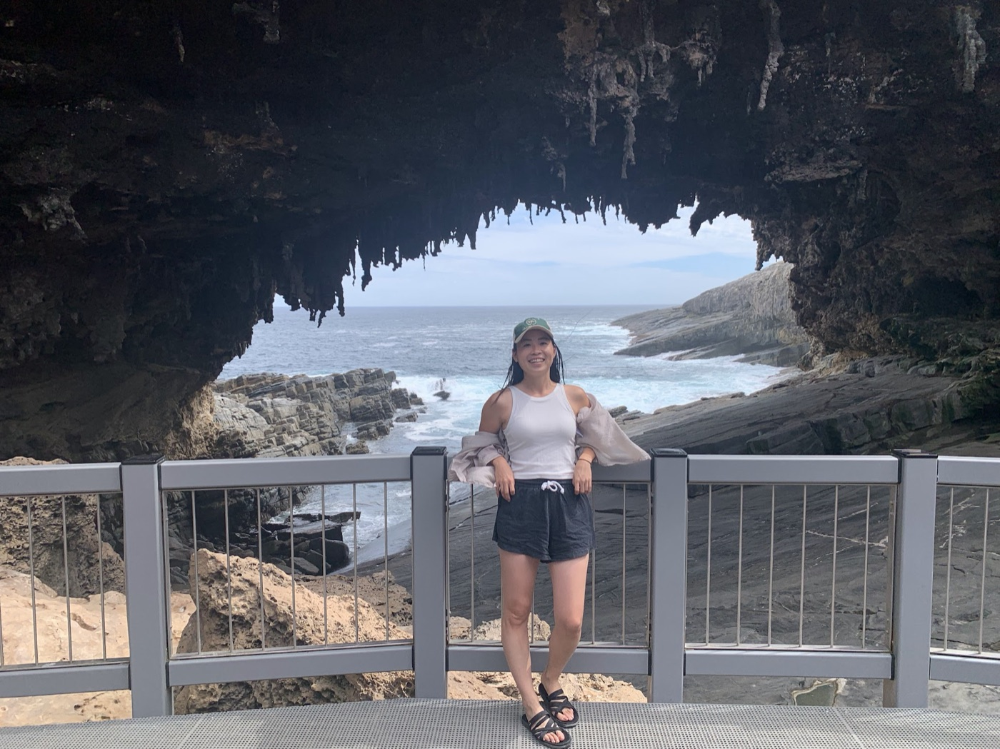

わたしのこと
My story
0120代は、挑戦の10年My 20s: ten years of trying
20代の私は、とにかく外に出てみることを選びました。ワーキングホリデーでのオーストラリア、フィリピンへの留学、英会話講師、そして自分で海外にものを売ってみること。いろいろなことに挑戦できた10年でした。
In my 20s, I chose to go out and try: a working holiday in Australia, studying in the Philippines, teaching English conversation, and selling to customers overseas on my own. Ten years of trying things.
02英語もできずに飛び込んだオーストラリアJumping into Australia without English
英語もできないまま飛び込んだオーストラリア。なかなか思うようにいかなくても、必死で食らいついていきました。バスで見知らぬ人に話しかけてみたり、どうやったらここで生き延びられるか、とにかく考えました。
I jumped into Australia without speaking English. Things rarely went the way I hoped, but I held on with everything I had. I talked to strangers on the bus, and kept asking myself how I was going to survive there.
大変な思いをたくさんしたからこそ、たくさんの気づきがありました。暮らしてみてわかったのは、彼らは仕事のために生きているのではなく、人生を楽しむために仕事をしているということです。
Because it was hard, it taught me a lot. Living there, I saw that people don't live to work. They work to enjoy life.

03見えてきた、日本のアナログさSeeing how analog Japan still is
一緒に働いてみると、みんな生産性をしっかり上げて仕事をしていました。そこで気づいたのが、日本のアナログさです。
Working alongside them, I saw how productive they were. And I noticed how analog Japan still is.
人手不足の日本だからこそ、デジタル化の必要はますます大きくなっています。もっと伸ばしていくべきだと思っています。
With Japan short of workers, the need to go digital keeps growing. I believe we should push it much further.
04外から見た日本Japan, seen from outside
海外から日本を見て気づいたのは、日本にはすばらしいものがたくさんあるのに、その魅力を伝えるのがまだまだ下手だということ。
Looking at Japan from abroad, I realised it has so much to offer, yet it is still not very good at telling the world about it.
海外の友達を茨城の旅に連れていくと、みんなすっかり気に入ってくれます。そして決まって言われるのが、この言葉です。
Whenever I take friends from overseas around Ibaraki, they fall in love with it. And they always say the same thing:
「東京とはちがう。これが本当の日本だね」
"This is so different from Tokyo. This is the real Japan."
0530代は、茨城に恩返しをMy 30s: giving back to Ibaraki
だから30代は、茨城に恩返しをしていきます。日本のヴィンテージ時計を世界に届けること。茨城の景色や食を英語で伝えること。会社のDX化をお手伝いして、人手不足の中でも生産性を上げること。どれも、20代に海外で見てきたことにつながっています。
So in my 30s, I want to give back to Ibaraki. Bringing Japan's vintage watches to the world. Sharing Ibaraki's places and food in English. Helping companies go digital, so they can do more with fewer people. All of it grows out of what I saw abroad in my 20s.